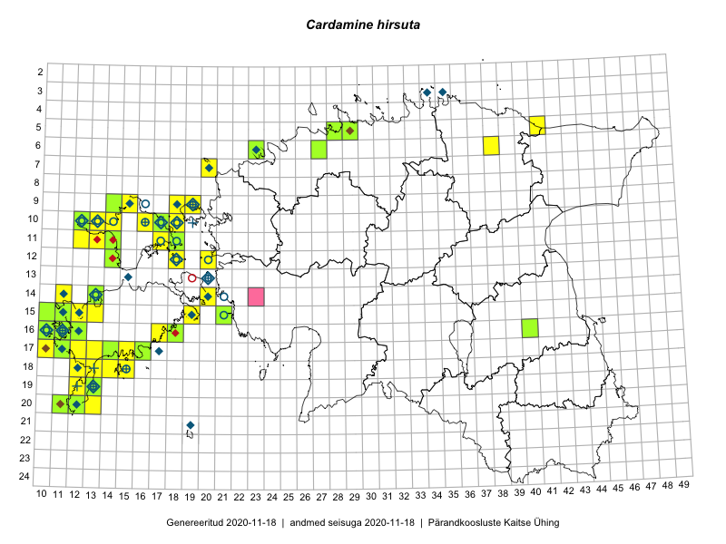

Cardamine hirsuta — kare jürilill
Kaardile koondatud taksonid: Cardamine hirsuta L. (179)

Kaart põhineb 179 kirjel, neist:
vaatlusi 150
eksemplare 29
Kaasaegsed1 leiukohad asuvad 54 ruudus.
Andmed “Eesti taimede levikuatlasest”,2 sulgudes ruutude arv:3
● 1971–2005 (35)
○ 1921–1970 (7)
△ kuni 1920 (0)
+ hävinud (0)
? kaheldav (0)
Lisaruudud teistest andmebaasidest:4
ELF: 2006– . . . (0)
PKÜ: 2006– . . . (1)
ELF: 1971–2005 (0)
PKÜ: 1997–2005 (0)
| Ruut | Vaatleja(d) | Vaatlusaeg | Kirje PlutoFis |
|---|---|---|---|
| 09-14 | Peedu Saar, Toomas Kukk | 2015-05-27 | ruut/ala: Cardamine hirsuta L. |
| 10-16 | Peedu Saar, Toomas Kukk | 2015-05-26 | ruut/ala: Cardamine hirsuta L. |
| 10-17 | Peedu Saar, Toomas Kukk | 2015-05-26 | ruut/ala: Cardamine hirsuta L. |
| 17-12 | Toomas Kukk, Mari Reitalu | 2014-06-20 | ruut/ala: Cardamine hirsuta L. |
| 17-13 | Mari Reitalu, Sirje Azarov | 2015-05-12 | ruut/ala: Cardamine hirsuta L. |
| 16-11 | Mari Reitalu | 2015-05-22 | ruut/ala: Cardamine hirsuta L. |
| 17-10 | Mari Reitalu, Triin Reitalu | 2015-05-10 | ruut/ala: Cardamine hirsuta L. |
| 16-10 | Mari Reitalu, Triin Reitalu | 2015-05-08 | ruut/ala: Cardamine hirsuta L. |
| 15-11 | Mari Reitalu, Triin Reitalu | 2015-04-25 | ruut/ala: Cardamine hirsuta L. |
| 19-13 | Oliver Parrest | 2015-05-20 | ruut/ala: Cardamine hirsuta L. |
| 17-14 | Mari Reitalu, Sirje Azarov | 2015-05-12 | ruut/ala: Cardamine hirsuta L. |
| 20-13 | Mari Reitalu, Oliver Parrest | 2015-05-26 | ruut/ala: Cardamine hirsuta L. |
| 14-13 | Mari Reitalu, Oliver Parrest | 2015-05-14 | ruut/ala: Cardamine hirsuta L. |
| 18-12 | Mari Reitalu, Oliver Parrest | 2015-05-22 | ruut/ala: Cardamine hirsuta L. |
| 15-13 | Mari Reitalu, Oliver Parrest | 2015-05-14 | ruut/ala: Cardamine hirsuta L. |
| 20-11 | Mari Reitalu, Oliver Parrest | 2015-05-26 | ruut/ala: Cardamine hirsuta L. |
| 14-11 | Mari Reitalu, Triin Reitalu | 2015-05-24 | ruut/ala: Cardamine hirsuta L. |
| 16-18 | Mari Reitalu, Sirje Azarov | 2015-05-16 | ruut/ala: Cardamine hirsuta L. |
| 20-12 | Triin Reitalu, Sirje Azarov | 2015-05-30 | ruut/ala: Cardamine hirsuta L. |
| 17-14 | Sirje Azarov, Mari Reitalu | 2015-04-27 | ruut/ala: Cardamine hirsuta L. |
| 18-13 | Mari Reitalu, Oliver Parrest | 2015-05-27 | ruut/ala: Cardamine hirsuta L. |
| 16-11 | Mari Reitalu, Triin Reitalu | 2015-05-28 | ruut/ala: Cardamine hirsuta L. |
| 15-12 | Mari Reitalu, Triin Reitalu | 2015-04-25 | ruut/ala: Cardamine hirsuta L. |
| 17-11 | Mari Reitalu, Triin Reitalu | 2015-05-08 | ruut/ala: Cardamine hirsuta L. |
| 16-10 | Sirje Azarov, Mari Reitalu | 2015-05-22 | ruut/ala: Cardamine hirsuta L. |
| 17-11 | Mari Reitalu, Triin Reitalu | 2015-05-19 | ruut/ala: Cardamine hirsuta L. |
| 16-11 | Sirje Azarov, Mari Reitalu | 2015-05-23 | ruut/ala: Cardamine hirsuta L. |
| 17-11 | Mari Reitalu, Triin Reitalu | 2015-05-10 | ruut/ala: Cardamine hirsuta L. |
| 16-12 | Mari Reitalu, Triin Reitalu | 2015-04-30 | ruut/ala: Cardamine hirsuta L. |
| 15-10 | Sirje Azarov, Mari Reitalu | 2015-05-24 | ruut/ala: Cardamine hirsuta L. |
| 10-12 | Meeli Mesipuu | 2015-05-27 | ruut/ala: Cardamine hirsuta L. |
| 11-12 | Meeli Mesipuu, Timo Luhamäe | 2015-05-27 | ruut/ala: Cardamine hirsuta L. |
| 11-13 | Meeli Mesipuu, Timo Luhamäe | 2015-05-27 | ruut/ala: Cardamine hirsuta L. |
| 06-23 | Mari Metsoja, Jaak-Albert Metsoja, Ott Luuk | 2015-06-04 | ruut/ala: Cardamine hirsuta L. |
| 20-11 | Mari Reitalu, Triin Reitalu | 2015-07-19 | ruut/ala: Cardamine hirsuta L. |
| 05-29 | Tiina Elvisto, Kadi-Liis Kesler | 2015-05-12 | ruut/ala: Cardamine hirsuta L. |
| 11-18 | Toomas Kukk, Peedu Saar | 2016-05-06 | ruut/ala: Cardamine hirsuta L. |
| 10-16 | Toomas Kukk, Peedu Saar | 2016-05-07 | ruut/ala: Cardamine hirsuta L. |
| 12-14 | Toomas Kukk, Peedu Saar | 2016-05-07 | ruut/ala: Cardamine hirsuta L. |
| 11-14 | Toomas Kukk, Peedu Saar | 2016-05-07 | ruut/ala: Cardamine hirsuta L. |
| 10-13 | Toomas Kukk, Peedu Saar | 2016-05-07 | ruut/ala: Cardamine hirsuta L. |
| 10-18 | Toomas Kukk, Peedu Saar | 2016-05-13 | ruut/ala: Cardamine hirsuta L. |
| 15-19 | Mari Reitalu, Triin Reitalu | 2016-06-30 | ruut/ala: Cardamine hirsuta L. |
| 06-38 | Tõnu Ploompuu | 2016-07-17 | ruut/ala: Cardamine hirsuta L. |
| 18-12 | Toomas Kukk, Meeli Mesipuu, Mari Reitalu | 2016-10-07 | ruut/ala: Cardamine hirsuta L. |
| 19-13 | Meeli Mesipuu | 2016-06-30 | ruut/ala: Cardamine hirsuta L. |
| 14-11 | Peedu Saar, Ott Luuk | 2016-10-07 | ruut/ala: Cardamine hirsuta L. |
| 19-12 | Ott Luuk, Peedu Saar | 2016-10-07 | ruut/ala: Cardamine hirsuta L. |
| 05-29 | Kadi-Liis Kesler, Tiina Elvisto | 2015-05-12 | ruut/ala: Cardamine hirsuta L. |
| 15-11 | Mari Reitalu | 2007-05-31 | ruut/ala: Cardamine hirsuta L. |
| 12-20 | Toomas Kukk, Katrin Jürgens | 2007-08-10 | ruut/ala: Cardamine hirsuta L. |
| 07-20 | Peedu Saar, Elle Roosaluste, Kaili Orav | 2017-05-29 | ruut/ala: Cardamine hirsuta L. |
| 09-15 | Peedu Saar, Ott Luuk | 2017-09-15 | ruut/ala: Cardamine hirsuta L. |
| 10-16 | Toomas Kukk, Peedu Saar | 2015-05-26 | punkt: Cardamine hirsuta L. |
| 17-12 | Toomas Kukk, Mari Reitalu | 2014-06-20 | punkt: Cardamine hirsuta L. |
| 05-41 | Meeli Mesipuu, Timo Luhamäe | 2015-07-24 | ruut/ala: Cardamine hirsuta L. |
| 17-13 | Mari Reitalu, Sirje Azarov | 2015-05-12 | punkt: Cardamine hirsuta L. |
| 16-11 | Mari Reitalu | 2015-05-22 | punkt: Cardamine hirsuta L. |
| 17-10 | Mari Reitalu, Triin Reitalu | 2015-05-10 | punkt: Cardamine hirsuta L. |
| 16-10 | Mari Reitalu, Triin Reitalu | 2015-05-08 | punkt: Cardamine hirsuta L. |
| 15-11 | Mari Reitalu, Triin Reitalu | 2015-04-25 | punkt: Cardamine hirsuta L. |
| 14-11 | Mari Reitalu, Triin Reitalu | 2015-05-25 | punkt: Cardamine hirsuta L. |
| 14-11 | Mari Reitalu, Triin Reitalu | 2015-05-25 | punkt: Cardamine hirsuta L. |
| 16-18 | Mari Reitalu, Sirje Azarov | 2015-05-16 | punkt: Cardamine hirsuta L. |
| 20-12 | Triin Reitalu | 2015-05-29 | punkt: Cardamine hirsuta L. |
| 17-14 | Mari Reitalu, Sirje Azarov | 2015-05-12 | punkt: Cardamine hirsuta L. |
| 17-14 | Sirje Azarov, Mari Reitalu | 2015-04-14 | punkt: Cardamine hirsuta L. |
| 17-11 | Mari Reitalu, Triin Reitalu | 2015-05-08 | punkt: Cardamine hirsuta L. |
| 16-10 | Sirje Azarov, Mari Reitalu | 2015-05-22 | punkt: Cardamine hirsuta L. |
| 16-10 | Sirje Azarov, Mari Reitalu | 2015-05-22 | punkt: Cardamine hirsuta L. |
| 16-10 | Sirje Azarov, Mari Reitalu | 2015-05-23 | punkt: Cardamine hirsuta L. |
| 16-11 | Sirje Azarov, Mari Reitalu | 2015-05-23 | punkt: Cardamine hirsuta L. |
| 16-11 | Sirje Azarov, Mari Reitalu | 2015-05-23 | punkt: Cardamine hirsuta L. |
| 16-11 | Sirje Azarov, Mari Reitalu | 2015-05-23 | punkt: Cardamine hirsuta L. |
| 15-10 | Sirje Azarov, Mari Reitalu | 2015-05-24 | punkt: Cardamine hirsuta L. |
| 11-13 | Meeli Mesipuu, Timo Luhamäe | 2015-05-27 | punkt: Cardamine hirsuta L. |
| 17-12 | Mari Reitalu, Toomas Kukk | 2014-06-20 | punkt: Cardamine hirsuta L. |
| 14-13 | Mari Reitalu, Oliver Parrest | 2015-05-14 | punkt: Cardamine hirsuta L. |
| 15-13 | Mari Reitalu, Oliver Parrest | 2015-05-14 | punkt: Cardamine hirsuta L. |
| 16-12 | Triin Reitalu, Mari Reitalu | 2015-04-30 | punkt: Cardamine hirsuta L. |
| 16-11 | Triin Reitalu, Mari Reitalu | 2015-04-30 | punkt: Cardamine hirsuta L. |
| 17-11 | Triin Reitalu, Mari Reitalu | 2015-05-20 | punkt: Cardamine hirsuta L. |
| 16-11 | Triin Reitalu, Mari Reitalu | 2015-05-28 | punkt: Cardamine hirsuta L. |
| 18-14 | Oliver Parrest | 2015-05-23 | punkt: Cardamine hirsuta L. |
| 18-15 | Oliver Parrest | 2015-05-23 | punkt: Cardamine hirsuta L. |
| 20-11 | Oliver Parrest, Mari Reitalu | 2015-05-26 | punkt: Cardamine hirsuta L. |
| 20-11 | Oliver Parrest, Mari Reitalu | 2015-05-26 | punkt: Cardamine hirsuta L. |
| 20-13 | Oliver Parrest, Mari Reitalu | 2015-05-26 | punkt: Cardamine hirsuta L. |
| 18-13 | Oliver Parrest, Mari Reitalu | 2015-05-27 | punkt: Cardamine hirsuta L. |
| 18-13 | Oliver Parrest, Mari Reitalu | 2015-05-27 | punkt: Cardamine hirsuta L. |
| 18-12 | Oliver Parrest, Mari Reitalu | 2015-05-22 | punkt: Cardamine hirsuta L. |
| 10-13 | Peedu Saar, Toomas Kukk | 2016-05-07 | punkt: Cardamine hirsuta L. |
| 12-14 | Peedu Saar, Toomas Kukk | 2016-05-07 | punkt: Cardamine hirsuta L. |
| 12-14 | Peedu Saar, Toomas Kukk | 2016-05-07 | punkt: Cardamine hirsuta L. |
| 10-16 | Peedu Saar, Toomas Kukk | 2016-05-08 | punkt: Cardamine hirsuta L. |
| 10-18 | Peedu Saar, Toomas Kukk | 2016-05-13 | punkt: Cardamine hirsuta L. |
| 09-18 | Peedu Saar, Toomas Kukk | 2016-05-13 | punkt: Cardamine hirsuta L. |
| 09-18 | Peedu Saar, Toomas Kukk | 2016-05-13 | punkt: Cardamine hirsuta L. |
| 09-18 | Toomas Kukk, Peedu Saar | 2016-05-13 | ruut/ala: Cardamine hirsuta L. |
| 10-18 | Toomas Kukk, Peedu Saar | 2016-05-13 | punkt: Cardamine hirsuta L. |
| 09-18 | Toomas Kukk, Peedu Saar | 2016-05-13 | punkt: Cardamine hirsuta L. |
| 15-19 | Mari Reitalu, Triin Reitalu | 2016-06-30 | punkt: Cardamine hirsuta L. |
| 19-12 | Peedu Saar, Ott Luuk | 2016-10-07 | punkt: Cardamine hirsuta L. |
| 14-11 | Ott Luuk, Peedu Saar | 2016-10-07 | punkt: Cardamine hirsuta L. |
| 05-28 | Kadi-Liis Kesler, Tiina Elvisto | 2015-05-12 | ruut/ala: Cardamine hirsuta L. |
| 10-12 | Timo Luhamäe, Meeli Mesipuu | 2015-05-27 | punkt: Cardamine hirsuta L. |
| 10-12 | Timo Luhamäe, Meeli Mesipuu | 2015-05-27 | punkt: Cardamine hirsuta L. |
| 11-13 | Timo Luhamäe, Meeli Mesipuu | 2015-05-27 | punkt: Cardamine hirsuta L. |
| 11-13 | Timo Luhamäe, Meeli Mesipuu | 2015-05-27 | punkt: Cardamine hirsuta L. |
| 11-12 | Timo Luhamäe, Meeli Mesipuu | 2015-05-27 | punkt: Cardamine hirsuta L. |
| 19-13 | Meeli Mesipuu | 2016-06-19 | punkt: Cardamine hirsuta L. |
| 18-12 | Meeli Mesipuu, Toomas Kukk, Mari Reitalu | 2016-10-07 | punkt: Cardamine hirsuta L. |
| 06-23 | Jaak-Albert Metsoja, Mari Metsoja, Ott Luuk | 2015-06-04 | punkt: Cardamine hirsuta L. |
| 06-23 | Jaak-Albert Metsoja, Mari Metsoja, Ott Luuk | 2015-06-04 | punkt: Cardamine hirsuta L. |
| 16-18 | Mari Reitalu | 2011-05-27 | punkt: Cardamine hirsuta L. |
| 05-29 | Kadi-Liis Kesler, Tiina Elvisto | 2015-05-12 | punkt: Cardamine hirsuta L. |
| 05-28 | Kadi-Liis Kesler, Tiina Elvisto | 2015-05-12 | punkt: Cardamine hirsuta L. |
| 12-18 | Toomas Kukk | 2017-05-05 | punkt: Cardamine hirsuta L. |
| 12-18 | Toomas Kukk, Peeter Pärn | 2017-05-06 | punkt: Cardamine hirsuta L. |
| 12-18 | Toomas Kukk | 2017-06-15 | punkt: Cardamine hirsuta L. |
| 09-15 | Ott Luuk, Peedu Saar | 2017-09-15 | punkt: Cardamine hirsuta L. |
| 15-11 | Toomas Kukk, Ilmar Uibopuu, Mari Reitalu | 2018-05-28 | punkt: Cardamine hirsuta L. |
| 11-18 | Toomas Kukk | 2018-07-09 | punkt: Cardamine hirsuta L. |
| 10-17 | Toomas Kukk | 2018-07-10 | punkt: Cardamine hirsuta L. |
| 10-18 | Toomas Kukk | 2018-07-10 | punkt: Cardamine hirsuta L. |
| 10-18 | Toomas Kukk | 2018-07-10 | ruut/ala: Cardamine hirsuta L. |
| 10-17 | Peedu Saar | 2018-07-10 | ruut/ala: Cardamine hirsuta L. |
| 10-17 | Peedu Saar | 2018-07-10 | punkt: Cardamine hirsuta L. |
| 14-20 | Peedu Saar | 2018-09-19 | punkt: Cardamine hirsuta L. |
| 14-20 | Peedu Saar | 2018-09-19 | ruut/ala: Cardamine hirsuta L. |
| 15-21 | Peedu Saar | 2018-09-18 | punkt: Cardamine hirsuta L. |
| 15-21 | Peedu Saar | 2018-09-18 | ruut/ala: Cardamine hirsuta L. |
| 15-21 | Toomas Kukk | 2018-09-18 | punkt: Cardamine hirsuta L. |
| 15-12 | Mari Reitalu, Triin Reitalu | 2019-03-17 | punkt: Cardamine hirsuta L. |
| 17-15 | Mari Reitalu, Sirje Azarov | 2019-04-23 | ruut/ala: Cardamine hirsuta L. |
| 17-15 | Sirje Azarov, Mari Reitalu | 2019-04-23 | punkt: Cardamine hirsuta L. |
| 16-18 | Peedu Saar | 2019-05-14 | ruut/ala: Cardamine hirsuta L. |
| 10-14 | Peedu Saar | 2019-05-21 | punkt: Cardamine hirsuta L. |
| 10-13 | Peedu Saar | 2019-05-21 | ruut/ala: Cardamine hirsuta L. |
| 09-15 | Peedu Saar, Toomas Kukk | 2019-05-21 | ruut/ala: Cardamine hirsuta L. |
| 12-18 | Toomas Kukk | 2019-05-04 | punkt: Cardamine hirsuta L. |
| 12-18 | Toomas Kukk | 2019-05-04 | ruut/ala: Cardamine hirsuta L. |
| 17-13 | Mari Reitalu | 2019-06-05 | ruut/ala: Cardamine hirsuta L. |
| 09-14 | Toomas Kukk, Peedu Saar | 2019-05-21 | ruut/ala: Cardamine hirsuta L. |
| 09-19 | Peedu Saar, Toomas Kukk | 2019-09-17 | punkt: Cardamine hirsuta L. |
| 11-17 | Toomas Kukk, Rein Kalamees | 2019-10-05 | punkt: Cardamine hirsuta L. |
| 17-11 | Mari Reitalu, Sirje Azarov | 2019-07-10 | ruut/ala: Cardamine hirsuta L. |
| 09-18 | Ott Luuk | 2019-09-17 | punkt: Cardamine hirsuta L. |
| 09-18 | Ott Luuk | 2019-09-17 | ruut/ala: Cardamine hirsuta L. |
| 12-18 | Toomas Kukk, Indrek Tammekänd | 2019-06-01 | punkt: Cardamine hirsuta L. |
| 20-11 | Uve Ramst | 2006-05-28 | TAM0014711: Cardamine hirsuta L. |
| 06-23 | Tõnu Ploompuu | 2015-06-08 | TALL C008758: Cardamine hirsuta L. |
| 10-17 | Peedu Saar, Toomas Kukk | 2015-05-26 | TAA0116169: Cardamine hirsuta L. |
| 16-11 | Ott Luuk | 2014-05-23 | TAA0116657: Cardamine hirsuta L. |
| 12-14 | Peedu Saar, Toomas Kukk | 2016-05-07 | TAA0133229: Cardamine hirsuta L. |
| 11-14 | Peedu Saar, Toomas Kukk | 2016-05-07 | TAA0137891: Cardamine hirsuta L. |
| 11-18 | Peedu Saar, Toomas Kukk | 2016-05-06 | TAA0137896: Cardamine hirsuta L. |
| 11-18 | Peedu Saar, Toomas Kukk | 2016-05-06 | TAA0137897: Cardamine hirsuta L. |
| 15-10 | Sirje Azarov | 2015-05-24 | TAA0133624: Cardamine hirsuta L. |
| 16-11 | Sirje Azarov | 2015-05-23 | TAA0133625: Cardamine hirsuta L. |
| 16-10 | Sirje Azarov | 2015-05-22 | TAA0133628: Cardamine hirsuta L. |
| 16-18 | Mari Reitalu, Sirje Azarov | 2015-05-16 | TAA0133630: Cardamine hirsuta L. |
| 17-16 | Aira Alasi, Sirje Azarov | 2015-04-26 | TAA0133632: Cardamine hirsuta L. |
| 17-14 | Mari Reitalu, Sirje Azarov | 2015-05-12 | TAA0133634: Cardamine hirsuta L. |
| 06-27 | Tõnu Ploompuu | 2015-05-10 | TAA0119017: Cardamine hirsuta L. |
| 17-11 | Tõnu Ploompuu | 2015-05-09 | TAA0119016: Cardamine hirsuta L. |
| 09-14 | Peedu Saar, Toomas Kukk | 2015-05-27 | TAA0114694: Cardamine hirsuta L. |
| 14-13 | Oliver Parrest, Mari Reitalu | 2015-05-14 | TAA0140129: Cardamine hirsuta L. |
| 16-10 | Triin Reitalu, Mari Reitalu | 2015-05-08 | TAA0140130: Cardamine hirsuta L. |
| 15-11 | Triin Reitalu, Mari Reitalu | 2015-04-25 | TAA0140131: Cardamine hirsuta L. |
| 16-12 | Triin Reitalu, Mari Reitalu | 2015-04-30 | TAA0140132: Cardamine hirsuta L. |
| 19-13 | Oliver Parrest | 2015-05-21 | TAA0140651: Cardamine hirsuta L. |
| 19-13 | Oliver Parrest | 2015-05-21 | TAA0140656: Cardamine hirsuta L. |
| 10-12 | Meeli Mesipuu, Timo Luhamäe | 2015-05-27 | TAA0140792: Cardamine hirsuta L. |
| 05-29 | Kadi-Liis Kesler, Tiina Elvisto | 2015-05-12 | TAA0119064: Cardamine hirsuta L. |
| 20-12 | Mari Reitalu | 2007-05-10 | TAA0143119: Cardamine hirsuta L. |
| 15-21 | Toomas Kukk, Ilmar Uibopuu | 2018-05-25 | TAA0147064: Cardamine hirsuta L. |
| 15-21 | Toomas Kukk, Ilmar Uibopuu | 2018-05-25 | TAA0147064.dupl: Cardamine hirsuta L. |
| 05-28 | Tiina Elvisto, Kadi-Liis Kesler | 2015-05-12 | TAA0148239: Cardamine hirsuta L. |
Kaasaegsed leiukohad (tähistatud värvitud ruutudega) põhinevad peamiselt 2014–2019 välitööandmetel. Väiksemal määral on andmebaasi kantud vanemaid leiuandmeid aastatest 2006–2013.↩︎
Kukk, T., Kull, T., Eesti taimede levikuatlas. Eesti Maaülikool, Põllumajandus- ja Keskkonnainstituut, Tartu, 2005.↩︎
NB! 2005. aasta atlase andmestikus katavad uuemad leiud vanemaid. Näiteks kui liik on ruudus registreeritud 1971–2005, siis pole võimalik öelda, kas ta oli sellest ruudust teada ka enne 1970. aastat. Vana atlase andmetel hävinud ja kaheldavaid leiukohti pole hilisemate (taas)leidude põhjal korrigeeritud.↩︎
Eestimaa Looduse Fondi (ELF) ja Pärandkoosluste Kaitse Ühingu (PKÜ) andmebaasid sisaldavad inventeeritud koosluste kirjeldusi ja liigiloendeid. Neist andmekogudest on kaardile lisatud lisatud vaid need ruudud, millest uue atlase andmekogus taksoni kohta kirjeid veel pole. Kõrvale on jäetud teadaolevalt kaheldavad määrangud. Kaartidel katavad uuema perioodi andmed vanemaid, PKÜ omad ELFi omi. Kattumise tõttu võib kaardil näha olla vähem mingi kategooria ruute kui legendis olev arv näitab. ELFi ja PKÜ andmed ei kajastu hetkel vaatluste tabelis ega ruutude liigiloendites.↩︎